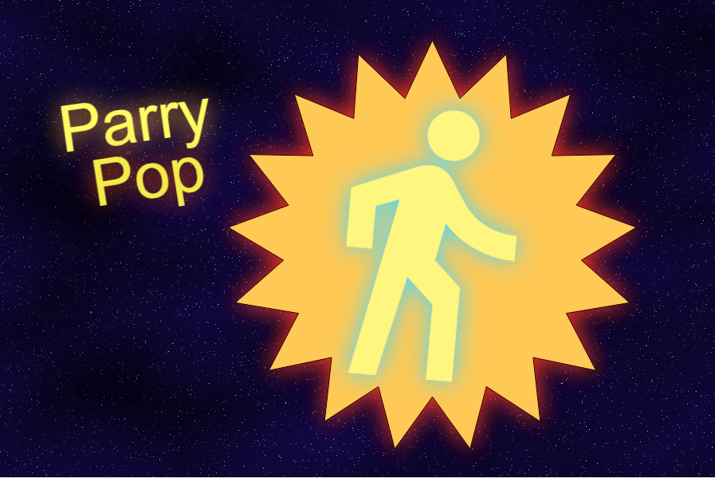
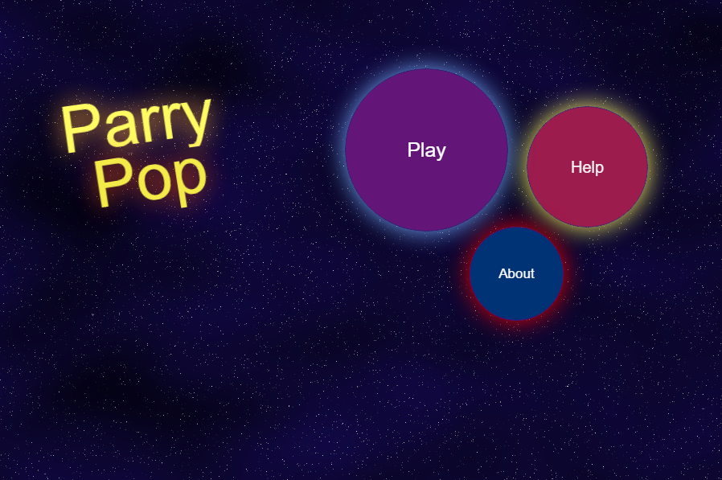
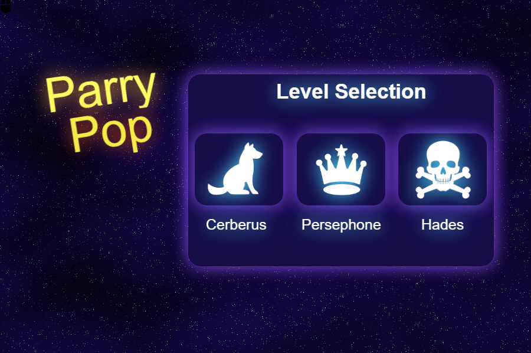
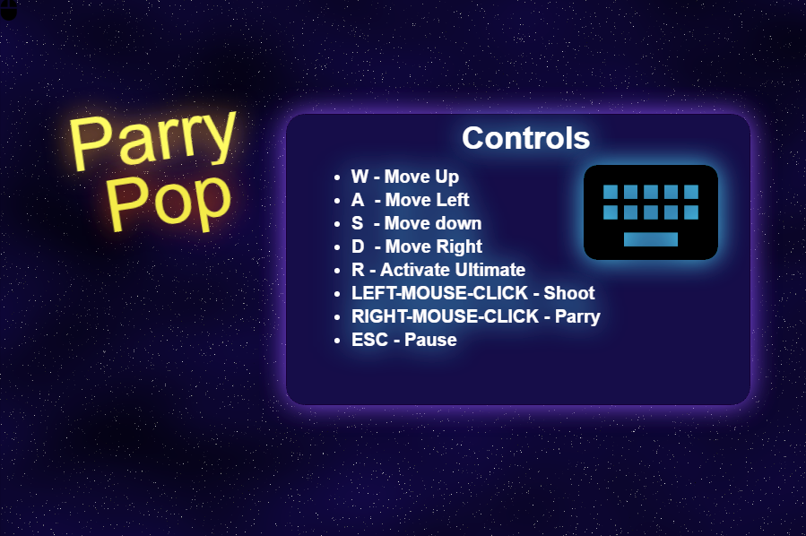
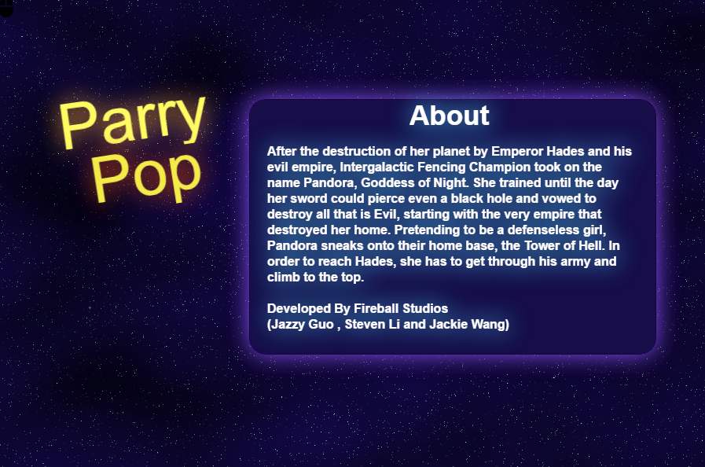
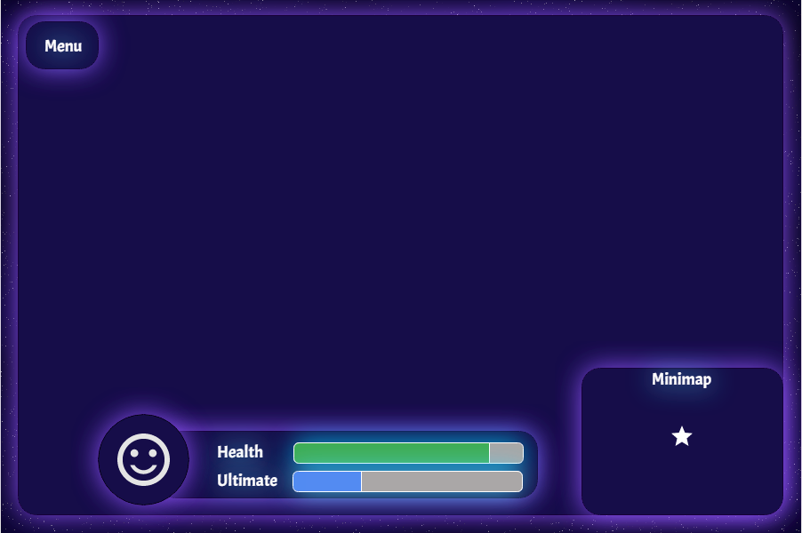

INTRODUCTION
This document describes a game called "Parry Pop", which is designed to be a 2D top-down shooter, built to explore new-game mechanics. The game focuses on aspects such as reaction time, accuracy, and quick decision-making. The game will employ sprite-based animation, tiled backgrounds, collision detection, projectiles, physics, AI and more basic 2D game techniques.
TECHNOLOGY
Parry Pop is an original HTML5 game developed using the Phaser game engine. A program to be decided will be used for all music and sound effects management. Artwork will be simple pixelated art made using Pisksel.
BACKSTORY
After her home-planet is destroyed by Emperor Hades and his evil empire, Intergalactic Fencing Champion took on the name “Pandora, Goddess of Night”. She trained until her sword could pierce a black hole and she vowed to destroy all that is Evil - starting with the very empire that destroyed her home. Pretending to be a defenseless girl, Pandora sneaks into the Tower of Hell, a base where Hades conducts his evil operations. She must climb to the top in order put an end to Hades and his wrath.
OBJECTIVE
Armed with a fencing foil and a revolver, Pandora’s goal is to reach the top of the tower and defeat Emperor Hades. Those that stand in her way consist of Hades's guard dog, Cerberus, and his demon wife, Persephone, as well as his entire evil army. Pandora will have to fight through each level by dodging, parrying, or by shooting bullets coming towards her. She must defeat all enemies on the current floor before being able to advance to the next floor.
GAMEPLAY
The game will work as a top down shooter, with Pandora being able to run in all four directions. She has the ability to control two weapons, a revolver and a fencing foil. Pandora will have to time her actions right in order to parry and riposte various bullets shot at her.
Only upon successful parries with perfect timing will Pandora be able to riposte and destroy the bullet.
Upon destroying a bullet, Pandora is able to receive ammo for her revolver.
- If Pandora messes up her parry timing, she simply reflects the bullet and is temporarily left unable to use her foil.
- If Pandora does not parry the bullet and it hits her she takes damage.
Besides using her sword, Pandora can also destroy bullets using her gun.
- Pandora’s trusty revolver is capable of destroying enemies in one hit as long as she gets the timing right.
- Although her ammo is limited, destroying other bullets with perfect timing will yield her large amounts of ammo.
Core Mechanic Timing
Everything in Parry Pop comes down to timing. Hades has supplied all of his goons with bullets which have powerful and protective force fields. Pandora is only able to damage them with by successfully timing her attacks. Every bullet/enemy will have a concentric circle around it, whose radius will slowly decrease over time until the radius reaches zero and then it resets to its full size. When Pandora attacks as the outer circle radius equals the radius of the bullet/enemy, Pandora will get a critical hit and in most cases destroy the bullet/enemy.
Ex. In this example, when the Outer Circle is Red, Pandora will perform a critical hit.
Ultimate: Bullet Time
Pandora charges up her ultimate as she destroys bullets and enemies. When her ultimate is fully charged, she can activate it to heighten her senses for a few seconds. While in this focused state, all
bullets and enemies (including concentric hit zones) appear to move in slow motion.
CONTROLS
This game will be played using both a keyboard and mouse.
- W - Move Up
- A - Move Left
- S - Move down
- D - Move Right
- R - Activate Ultimate
- LEFT-MOUSE-CLICK - Shoot
- RIGHT-MOUSE-CLICK - Parry
- ESC - Pause the game.
GRAPHICAL USER INTERFACE
The game will consist of 6 screens.
- SPLASH SCREEN - Shown when the game first loads.

- MAIN MENU - Consists of the Play, Help, and About buttons.

- LEVELS SELECTION SCREEN - Screen where the player can choose between the various levels (Cerberus, Persephone, Hades)

- CONTROLS SCREEN - Displays all user keyboard and mouse controls.

- HELP SCREEN - Displays information about Parry Pop.

- IN-GAME SCREEN - The In-Game User Interface.

ARTWORK
All artwork in the game will be original. The following needs to be created:
- Pandora - Top-down Sprite with the following animations:
- Walking
- Shooting
- Taking Damage
- Parrying
- Ultimate
- Death
- Enemies - Top-down Sprites with the following animations:
- Walking
- Shooting
- Taking Damage
- Death
- Bullets - Circle sprites with the following animations:
- Destruction
- Splash Art
- Levels
SOUND EFFECTS
All sound effects will be original. Sounds must be made to coincide with each of the following events:
- Walking
- Shooting
- Bullet Popping
- Parrying - Successful parrying
- Riposte
- Taking Damage
- Pandora Dying
- Enemies Dying
- Clearing Level
MUSIC
Game Music will be added when time permits.